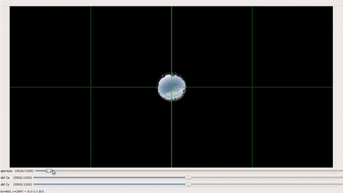

Welcome to OmniCV Documentation¶
Introduction¶
A computer vision library for omnidirectional(360 degree) cameras. This package is divided into two parts:
- Basic functions for inter-conversion of different types of mappings associated with omnidirectional cameras, virtual reality, and 360 ° videos, like cubemap, spherical projections, perspective projection, and equirectangular projection.
- Software applications like ** 360-degree video viewer**, fisheye image generator with variable intrinsic properties, GUI to determine fisheye camera parameters.
Objectives of the OmniCV library¶
This library has been developed with the following objectives:
- Quick and easy to use API to encourage and enhance the research in areas using omnidirectional cameras.
- To support real-time applications.
- Provide extensions in python as well as C++ as they are the languages used by researchers.
- Provide ROS package to use in robotics research.
Output Gallery¶
Some interesting 360 ° video effects
 |
 |
Creating custom fisheye images
 |
 |
GUI to determine fisheye camera parameters
 |
 |
Horizontal and vertical orientation viewing mode support
 |
 |
Index to theory examples , application notes and ROS nodes¶
Installation guide¶
A custom make file has been written which provides quick and easy options for installing and testing the library.
git clone https://github.com/kaustubh-sadekar/OmniCV-Lib
cd OmniCV-Lib/omnicv/
# To build c++ as well as python files
make build-all
# To build only python files
make build-python
# To build only c++ files
make build-cpp
Installing OmniCV in a virtual environment using pipenv. Pipfile and Pipfile.lock files have been provided. Copy both the files to the present working directory. Then simply run the following commands to setup OmniCV in a local environment.
pipenv install
pipenv shell
Running Tests¶
There are two types of tests provided for users. Being a vision based package visual tests have also been provided.
To run non-visual tests
cd OmniCV-Lib/omnicv/
# To test only python extension of the project
make test-py
# To test only c++ extension of the project
make test-cpp
# To test python as well as c++ extension of the project
make test-all
To run visual tests
cd OmniCV-Lib/omnicv/
# To run visual test only python extension of the project
make test-py-gui
# To run visual test only c++ extension of the project
make test-cpp-gui
# To run visual test python as well as c++ extension of the project
make test-all-visual
NOTE : Images labeled under `labeled to reuse` have been used for the experiments.